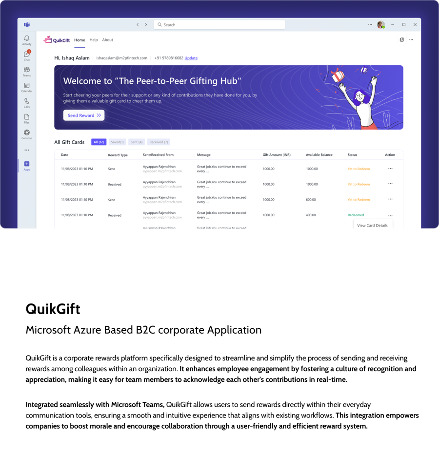
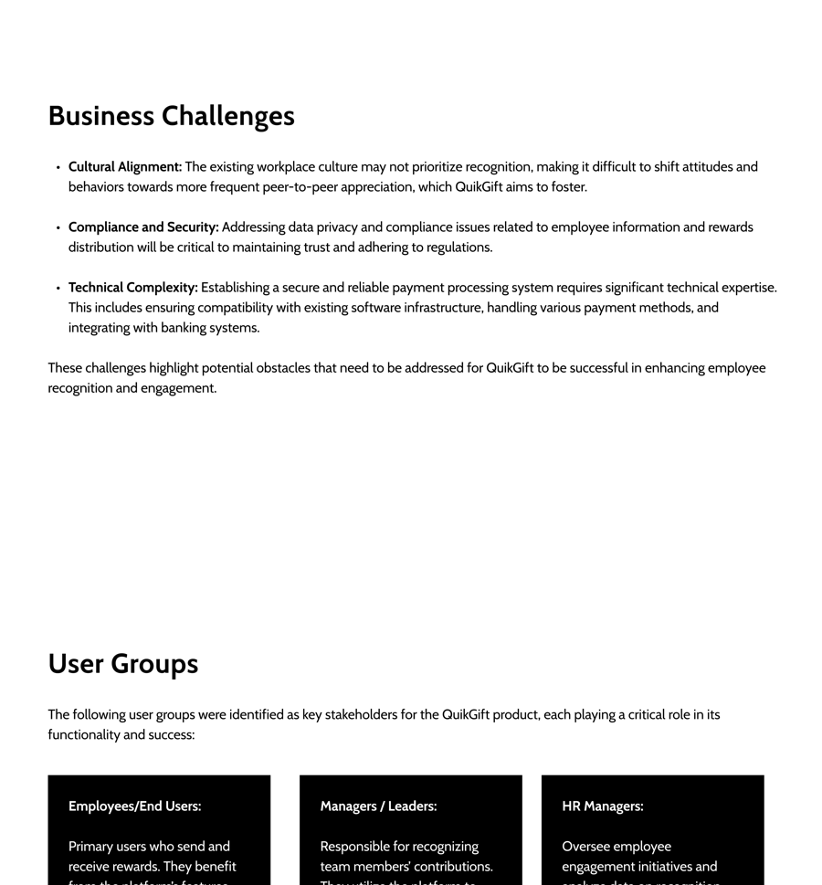
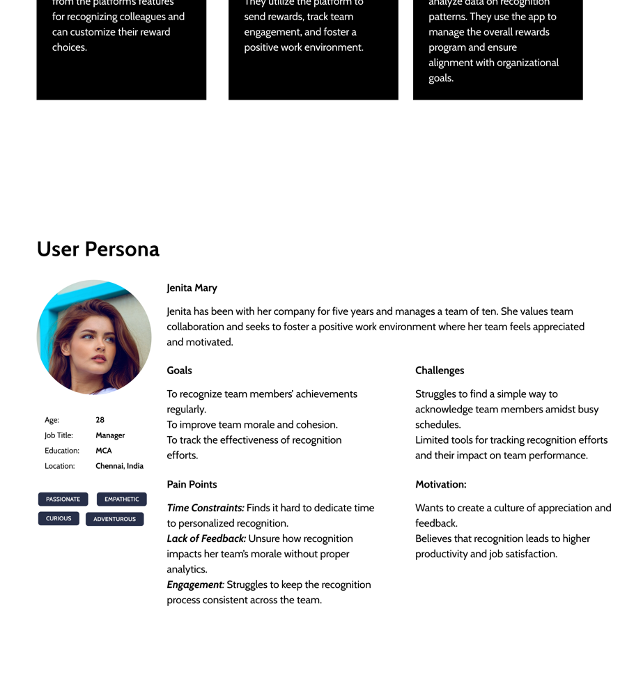
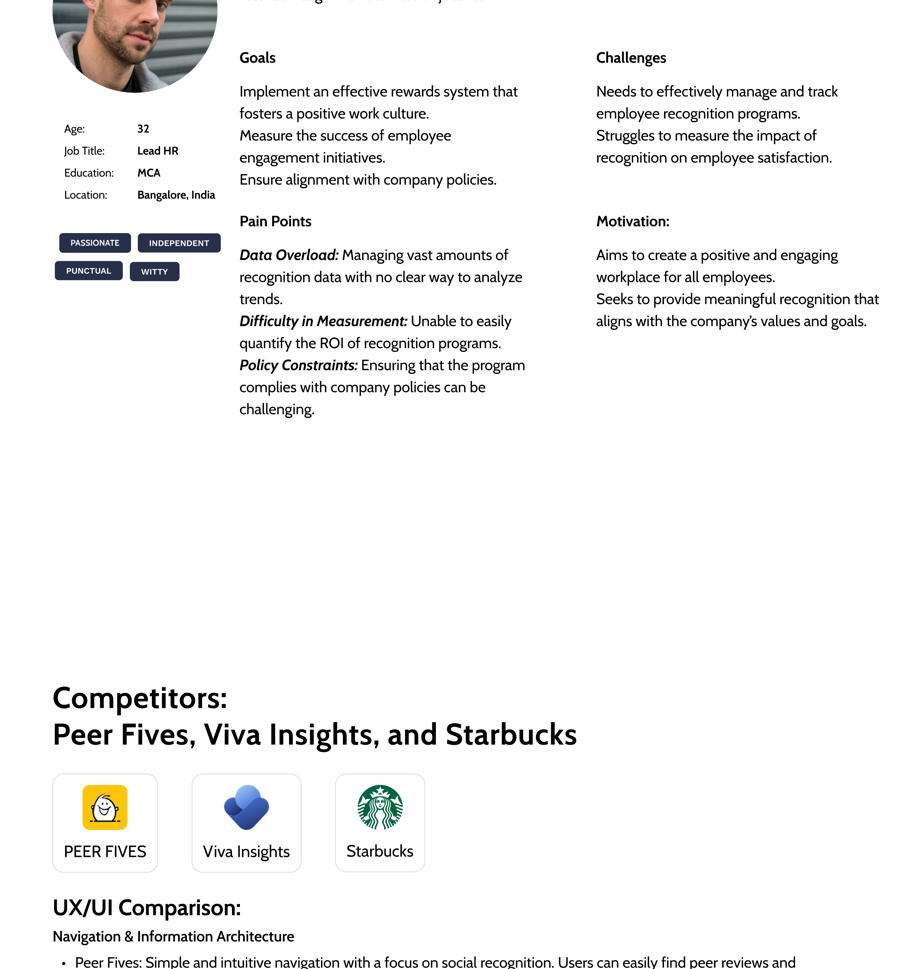
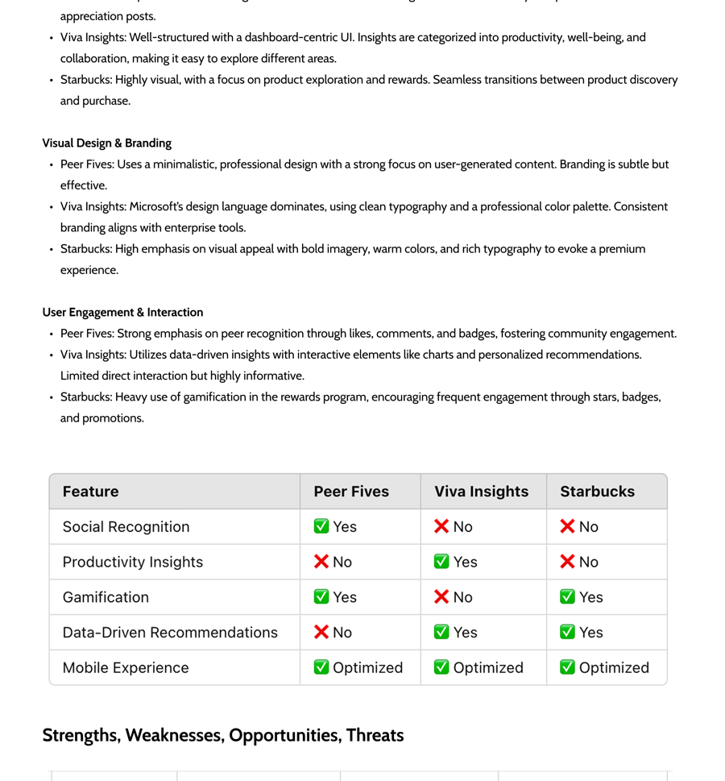
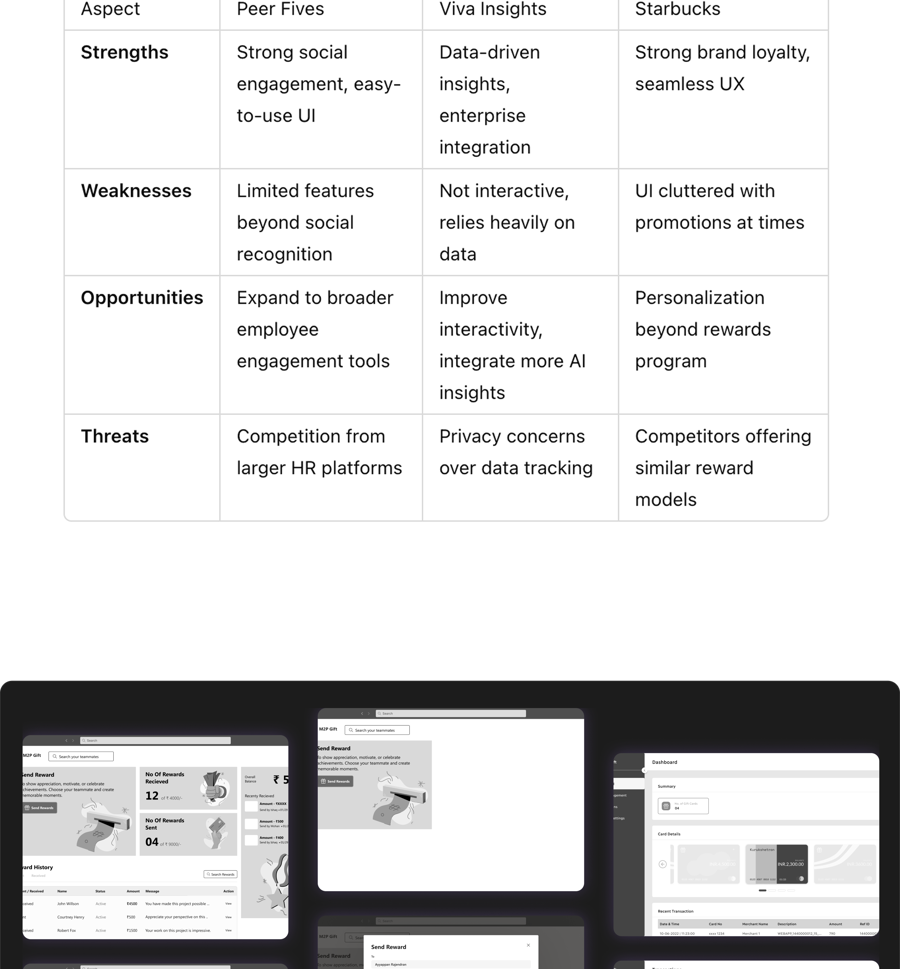
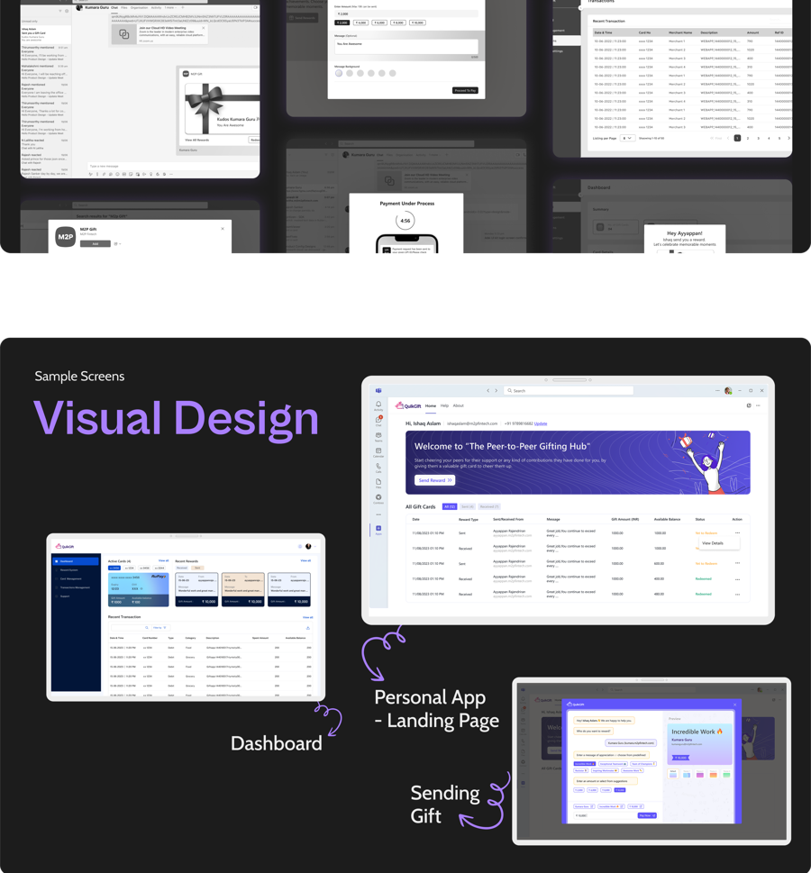
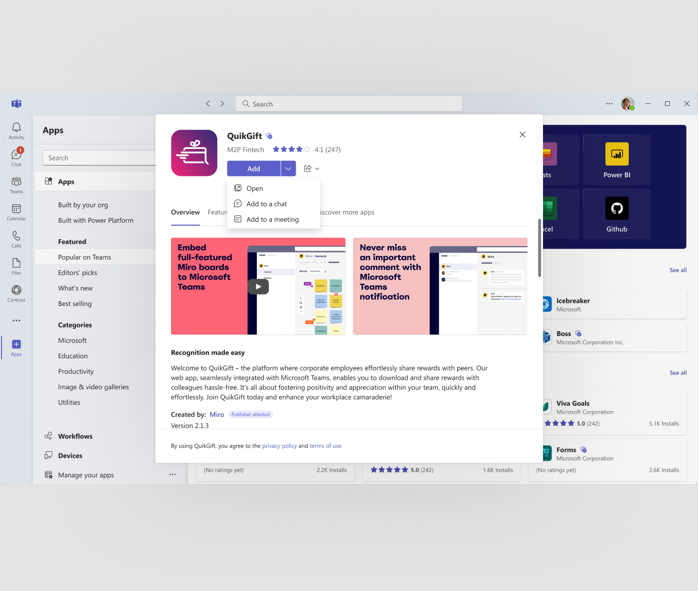

Designing QuikGift
A peer-to-peer recognition platform built to live inside Microsoft Teams — the full trace, including exactly where the process stopped before a formal user test.

QuikGift is a corporate rewards platform for sending and receiving recognition between colleagues — integrated directly into Microsoft Teams so it lives inside the tool people already use all day, rather than becoming one more app nobody opens.
Four business goals that all point at the same friction
Testing whether "add a rewards app" was even the right frame
The assumption to check: that recognition was failing for lack of a good enough rewards app. Stakeholder input suggested something narrower and more specific — recognition was failing because it required leaving the tools people already worked in.
Four goals, three real constraints, three user groups
- Workplace Engagement Catalyst — foster a culture of appreciation, empowering colleagues to recognize each other seamlessly.
- Integrated Recognition Hub — a fully embedded solution within Microsoft Teams, frictionless without leaving daily workflow.
- Holistic Rewards Ecosystem — peer-to-peer recognition plus real analytics and reporting for HR and management.
- Recognition Experience Expert — tailored, personalized reward options that understand workplace dynamics.
Three real challenges sat underneath those goals: a workplace culture that doesn't already prioritize recognition is hard to shift by adding software alone; employee data and reward distribution raise real compliance and privacy questions; and a reliable payment processing system means genuine technical complexity.

Three distinct groups needed this to work for different reasons: employees sending and receiving recognition day to day, managers recognizing their teams and tracking engagement, and HR overseeing the program and needing to prove it was working.
A manager and an HR lead want the same feature for different reasons
Clustering the goals and challenges
Friction to recognize
Proof of impact
Trust & compliance
Jenita Mary and Ram Prasath — real, documented, not invented


"Better visibility" is two different features
- Symptom: both a manager and an HR lead ask for "better visibility" into recognition.
- Problem: that phrase means a fast personal view for one and a defensible analytics rollup for the other.
- Root cause: no existing tool served both altitudes from the same underlying data.
One data model, named as the opportunity early
"Visibility" meaning two different things → need for both a fast personal view and a rolled-up analytical one → opportunity: one shared data model → solution: a personal recognition hub and a separate HR dashboard, detailed in Section 04.
None of the closest competitors were actually competitors
Three real strengths, none of them complete
Peer Fives does social recognition well but offers little beyond it. Viva Insights (Microsoft's own product) has strong data insight but isn't engaging day to day. Starbucks has neither social recognition nor productivity insight, but nobody does gamification and repeat engagement better.

Borrowing deliberately from outside the category
That comparison directly shaped the brief: build the social recognition layer Peer Fives does well, back it with the analytics rigor Viva Insights users expect from Microsoft's own ecosystem, and borrow enough of Starbucks' gamification instinct to make recognition something people want to keep doing.
Alternative considered and rejected: building only the HR analytics layer first, treating the personal recognition experience as a later phase. Rejected because the research showed recognition dies without a fast, frictionless entry point — building the dashboard first would have had nothing to report on.
A dashboard for Ram, a landing page for Jenita — one product
Split by altitude, not by feature
One underlying data model, two entry points: a personal hub for fast, individual recognition, and an HR dashboard for the aggregated, exportable view.
Send recognition, and pull a report
Low-fidelity first, to test the split before styling it
Wireframes stayed low-fidelity first specifically to test whether one information architecture could genuinely serve both the fast, personal act of sending recognition and the aggregated, analytical view HR needed.

Two interfaces, one visual system
The shipped design split cleanly: a personal app landing page — "The Peer-to-Peer Gifting Hub" — as the fast, human entry point, and a separate analytics dashboard giving HR and managers the aggregated, exportable view Ram Prasath needed to defend the program's ROI.

User testing was scoped into the process — the honest scorecard
Named as the final stage — not run within this documented scope
The structure that was actually built for it
Two personas with genuinely different success criteria, a competitive analysis that named specific, testable feature gaps, and two distinct interfaces — the personal hub and the HR dashboard — that could each be evaluated against the persona they were built for. That's the scaffolding a real test would have been run against.
Stated at the level it was actually reached
| Metric | Result |
|---|---|
| Personas with distinct success criteria | 2 (Jenita, Ram) |
| Competitor capability gaps identified | 3 (Peer Fives, Viva Insights, Starbucks) |
| Task completion / satisfaction score | Not measured — usability round not documented as run |
Prototype · Key Learnings
Prototype
QuikGift shipped as a real Microsoft Teams app — listed and installable inside the Teams app store, not just mocked up as a standalone screen.

Key Learnings
Recognition fails at the point of friction, not intent
Nobody in this research lacked the desire to recognize colleagues. They lacked a fast enough way to do it inside their actual workflow.
The same word can hide two different features
"Visibility" meant a quick personal view for Jenita and a defensible analytics rollup for Ram — conflating them would have underserved both.
Borrow from outside your category on purpose
Starbucks isn't an HR platform, but its rewards program is a masterclass in repeat engagement.
Naming a test stage isn't the same as running one
The process document said "test." This case study only claims what that stage actually produced.
The through-line: QuikGift's real competition was never another rewards app. It was the extra ten seconds of effort that decides whether recognition happens at all.